WeWatch 사용자 매뉴얼
Oracle · MySQL · PostgreSQL · EDB · SQL Server 통합 모니터링 데스크톱 앱 — 설치부터 화면별 사용법까지
개요
WeWatch는 여러 데이터베이스 서버(Oracle, MySQL, PostgreSQL, EDB, SQL Server)를 하나의 화면에서 통합 모니터링하는 Windows 데스크톱 애플리케이션입니다. 실시간 세션·락·복제 상태 확인, 오브젝트(테이블/인덱스/뷰 등) 탐색과 DDL 확인, 성능 대시보드, 사용자·서버 권한 관리 기능을 제공합니다.
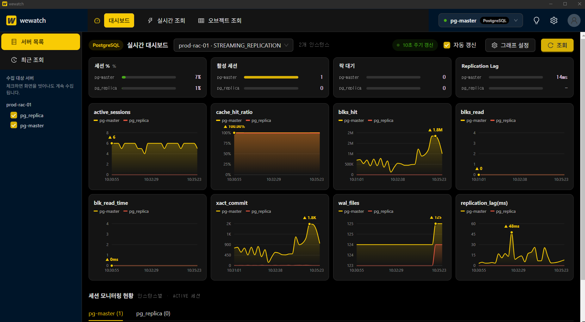
설치 방법
wewatch는 Windows용 설치 파일(.exe) 하나로 배포됩니다.
-
배포받은
wewatch-<버전>-setup.exe파일을 실행합니다. - 설치 마법사의 안내에 따라 설치 위치를 확인하고 진행합니다(별도 설정 없이 기본값 그대로 진행해도 됩니다).
- 설치가 끝나면 바탕화면 또는 시작 메뉴에 생성된 wewatch 아이콘으로 앱을 실행합니다.
- 앱은 실행 시 내장된 서버를 자동으로 함께 구동하므로, 별도의 서버 설치나 실행이 필요하지 않습니다.
| 최초 로그인 계정 |
admin / wewatch1234! (최초 로그인 후
비밀번호를 변경하세요)
|
|---|---|
| 무료 체험 기간 | 최초 실행일로부터 6개월. 만료 후에는 정식 라이선스 키 입력이 필요합니다 — 라이선스 참고 |
wewatch-backend.exe가 남아있지 않은지 확인하세요.
로그인
아이디/비밀번호를 입력해 로그인합니다.
로그인 화면의 DB 타입 선택은 로그인 후 상단 헤더에서 언제든지 조회할
서버를 바꿀 수 있으므로 최초 기본값 정도로만 참고하면 됩니다.
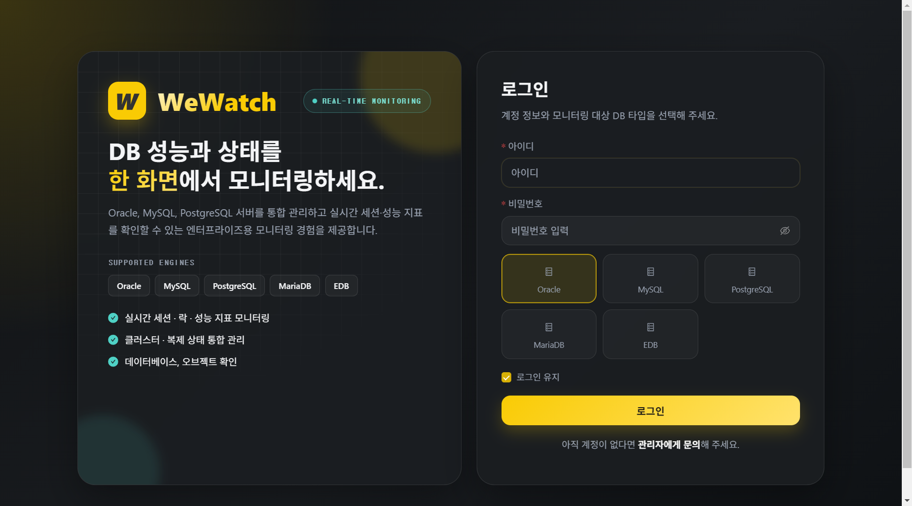
- 초기 패스워드는 admin/wewatch1234! 입니다.
- 접속하고자 하는 DB의 타입을 선택합니다. DB타입은 프로그램 내에서도 변경할 수 있습니다. (마지막 선택한 DB타입이 로그인 화면에 기본값으로 표시됩니다.)
설치 이후 초기 설정
설치 후 처음 로그인하면 조회할 서버가 아직 하나도 없는 상태입니다.
admin 계정으로 로그인해서 아래 순서대로 등록하면 실제 모니터링을
시작할 수 있습니다. 우측 상단 톱니바퀴(⚙) 아이콘을 클릭 후 관리자
화면에서 진행합니다.
1번 사용자 추가 → 2번 클러스터 등록(선택) → 3번 DB 서버 등록 →
4번 접근권한 부여
1사용자 추가
/admin/users > "사용자 등록" 버튼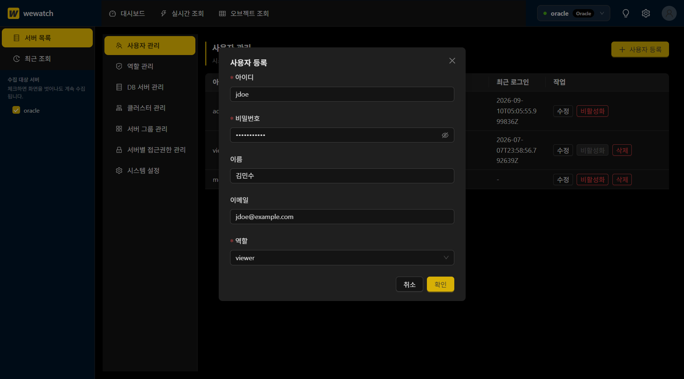
- 단독으로 사용하는 경우 admin 계정을 사용해도 무방합니다.
- 아이디·비밀번호는 필수이며, 이름·이메일은 선택 입력입니다.
- 역할(role)에 따라 화면/기능 접근 권한이 결정되므로, 미리 역할 관리에서 역할을 만들어두면 좋습니다.
2클러스터 등록 (RAC/Replication 구성이 있는 경우)
/admin/db-clusters > "클러스터 등록" 버튼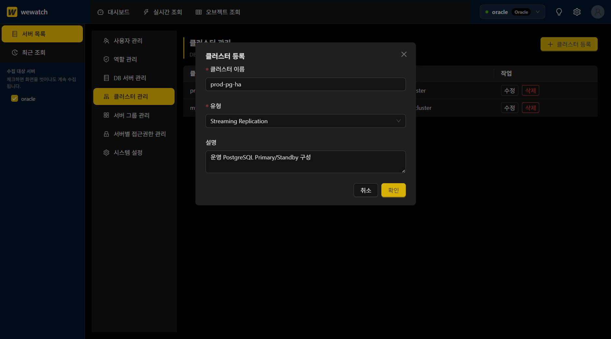
- 단일 서버만 모니터링한다면 이 단계는 건너뛰어도 됩니다. Replication(Primary/Standby), RAC 구성으로 여러 서버를 하나의 클러스터로 묶어 대시보드에서 함께 보고 싶은 경우에만 먼저 클러스터를 만들어둡니다.
- Postgres, MySQL 클러스터는 Streaming Replication을 선택합니다.
- Oracle 클러스터는 RAC를 선택합니다.
3DB 서버 등록
/admin/db-servers > "서버 등록" 버튼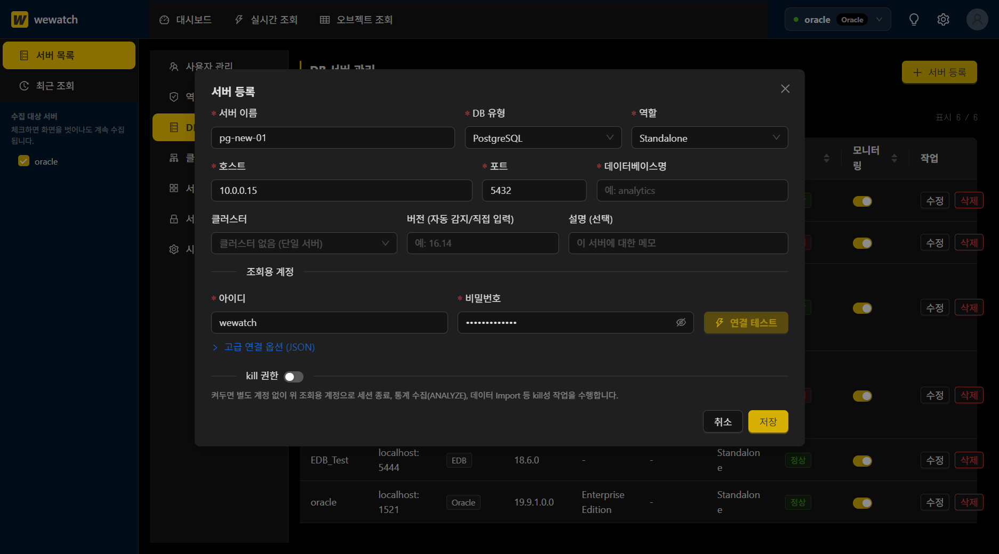
- 서버 이름 / DB 유형(Oracle·MySQL·PostgreSQL·MariaDB·EDB·SQL Server) / 역할(Primary·Standby·RAC Node·Standalone)을 선택합니다.
- 호스트, 포트, 데이터베이스명과 조회용 계정(아이디/비밀번호)을 입력한 뒤 "연결 테스트"로 접속 여부를 바로 확인할 수 있습니다.
- 2번에서 클러스터를 만들었다면 "클러스터" 항목에서 선택해 소속시킵니다. Standalone서버의 경우 공백으로 남겨둡니다. 버전은 자동으로 조회되며, 필요 시 수동으로 입력할 수도 있습니다.
- 오라클 서버 접속 시 인증관련 에러가 발생한다면 "Oracle Thick 모드 사용" 옵션을 활성화하고 Oracle Client 라이브러리 경로를 지정해야 합니다.
-
"시스템 설정" - "Oracle Thick 모드 사용"을 활성화 한 후 Oracle
Client 라이브러리(64bit) 경로를 입력합니다. Oracle Instant는
아래 경로에서 다운로드 가능합니다.
Oracle Instant Client 다운로드 -
접속 계정은 DB별 아래 권한이 필요합니다.
필요한 DB 계정 권한 — 조회용 계정 하나가 모든 조회 기능을 담당합니다. 별도의 Kill 전용 계정은 없고, 접근권한 화면에서 특정 사용자/역할에게 "Kill 허용"을 켜주면 같은 계정으로 세션 강제 종료·통계 수집·CSV Import까지 수행합니다. 따라서 조회 계정에 대한 적절한 권한이 필요합니다.
-
Oracle
- 조회:GRANT CREATE SESSION, SELECT_CATALOG_ROLE TO WEWATCH;(AWR/ASH 화면은 Diagnostics & Tuning Pack 라이선스 별도 필요).
- Kill/통계수집:GRANT ALTER SYSTEM TO WEWATCH;,GRANT EXECUTE ON DBMS_STATS TO WEWATCH; -
MySQL / MariaDB
- 조회:GRANT select, execute, process, file ON *.* TO wewatch@'%';,
GRANT replication client, replication slave ON *.* TO wewatch@'%';
- Kill:GRANT connection_admin ON *.* TO wewatch@'%';
GRANT super ON *.* TO wewatch@'%'; -
PostgreSQL / EDB
- 조회:GRANT pg_monitor TO wewatch; GRANT USAGE ON SCHEMA <조회_schema> TO <접속계정>
- Top SQL 화면은 대상 DB에pg_stat_statements확장 설치 필요.
- Kill/통계수집:GRANT pg_signal_backend TO wewatch;
-
Oracle
4접근권한 부여
/admin/db-server-permissions > "접근권한 등록" 버튼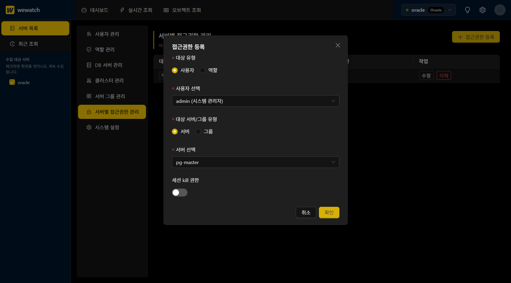
- 방금 등록한 서버는 사용자에게는 아직 보이지 않습니다. 대상 유형(사용자/역할)과 대상 서버 또는 그룹을 선택해 접근권한을 부여해야, 해당 사용자의 헤더 서버 선택 드롭다운과 대시보드에 그 서버가 나타납니다.
- 기본적으로는 대상 유형은 "사용자", 사용자 선택에 "admin", 대상 서버/그룹 유형은 "서버", 서버 목록에서 방금 등록한 서버를 선택 후 확인을 클릭하면 됩니다.
- "세션 kill 권한"을 활성화하는 경우 해당 서버의 세션을 kill할 수 있습니다.
- 등록된 서버가 많은 경우 업무 용도나 시스템 단위로 묶어서 관리하는 것이 편리합니다. 서버 그룹 관리에서 여러 대의 서버를 하나의 이름으로 묶어두면, 접근권한 부여 시 그룹 단위로 한 번에 권한을 부여할 수 있습니다.
- 위 단계를 마치면 새로 만든 사용자로 로그인해 대시보드에서 방금 등록한 서버가 조회되는지 확인해보세요.
- 만약 서버가 조회되지 않는다면, 접근권한이 제대로 부여되지 않은 경우입니다.
- 등록이 정상적으로 이뤄졌다면 화면 상단 오른쪽의 서버 선택 드롭다운에서 서버를 선택합니다.
실시간 대시보드
로그인 직후 보여지는 첫 화면입니다. 상단 헤더 오른쪽의 서버 선택
드롭다운(●서버명 배지)에서 조회할 서버를 고르면, 해당 서버(또는
클러스터 전체)의 CPU·세션·복제 지연 등 핵심 지표를 실시간 그래프로
보여줍니다.
화면 중앙 상단의 클러스터 관련 콤보박스를 통해 다른 클러스터를
선택할 수 있습니다.
화면을 벗어나도 체크된 서버는 성능 데이터를 계속 백그라운드에서
수집됩니다. 로그오프 후 재로그인 시에는 초기화됩니다.
대시보드 기본 화면
/dashboard- 상단 탭(전체 / 운영그룹 / DB타입별)으로 서버 목록을 그룹핑해서 찾을 수 있습니다.
- 동일 플랫폼의 서버가 좌측에 나열되며, 변경이 필요한 경우 화면 상단 중앙의 클러스터 선택 드롭 박스에서 변경합니다.
- 다른 플랫폼의 서버로 변경이 필요한 경우에는 화면 상단 오른쪽의 서버 선택 드롭 박스에서 변경합니다.
- 서버명 앞의 색상 점은 최근 접속 테스트 상태(초록=정상, 빨강=실패)를 나타냅니다.
- 가운데 그래프 영역 우측 상단의 "그래프 설정"(톱니바퀴 아이콘) 버튼을 누르면 표시할 지표를 직접 고를 수 있습니다. 아무것도 고르지 않은 계정에는 DB 유형별로 실무에서 가장 많이 보는 지표(Oracle: CPU·Active Session·Buffer Cache Hit 등, MySQL: QPS·Threads Running·InnoDB Buffer Pool Hit Ratio 등, PostgreSQL/EDB: TPS·Active Session·Cache Hit Ratio 등)가 기본값으로 채워져 있어, 처음 접속했을 때도 바로 핵심 지표부터 볼 수 있습니다.
- 한 번 고른 지표 구성은 계정 × DB 엔진 단위로 서버에 저장되어, 다른 PC에서 같은 계정으로 로그인해도 그대로 유지됩니다.
실시간 조회 — 세션
좌측 실시간 조회 탭에서 세션·트랜잭션·Top SQL 등을 실시간으로 조회합니다. 모든 화면은 자동 갱신 체크박스로 주기적 새로고침을 켜고 끌 수 있습니다.
세션
/realtime/sessions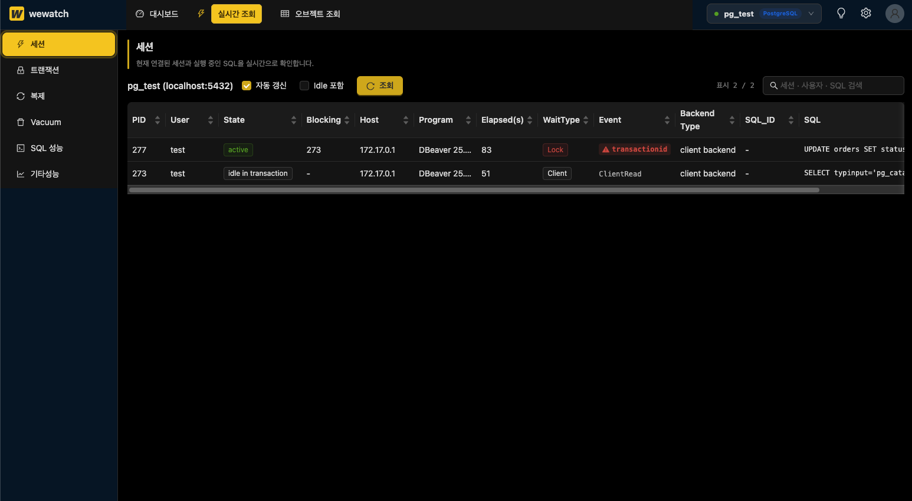
- 현재 연결된 세션과 실행 중인 SQL을 조회합니다. "Idle 포함" 체크박스로 유휴 세션 표시 여부를 조절할 수 있습니다.
- 문제가 발생한 세션의 경우 빨간색 배지로 강조되어, 문제가 발생한 상황을 바로 알아챌 수 있습니다.
- 화면 오른쪽 상단의 필터창을 통해 세션, 사용자, SQL 등을 필터링할 수 있습니다.
세션 상세
/realtime/sessions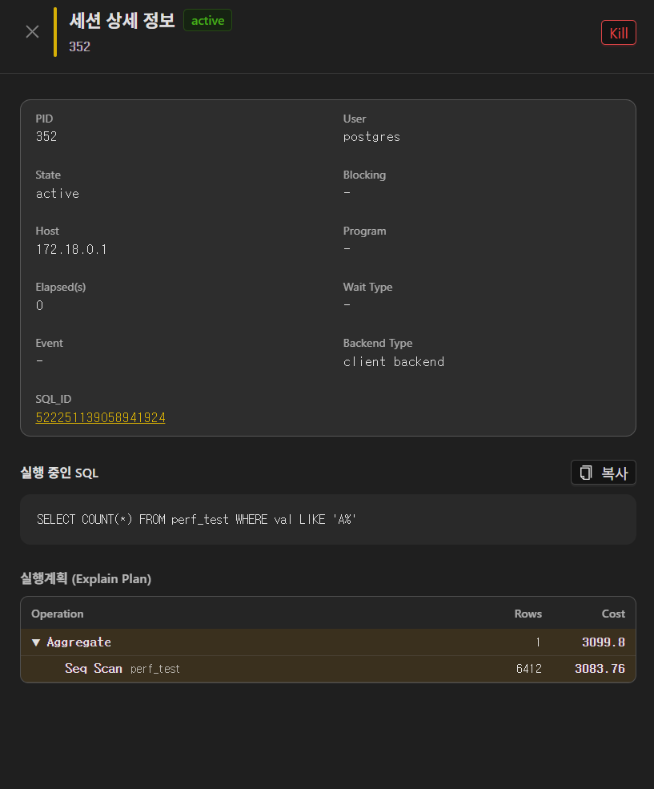
- 세션 클릭 시 상세 세션 정보 및 SQL, 실행계획 등을 확인할 수 있습니다.
- 오라클의 경우 sql_id를 클릭하면 해당 SQL의 상세정보를 확인할 수 있습니다.
실시간 조회 — 트랜잭션 / 락
진행 중인 트랜잭션과 블로킹(잠금 대기) 여부를 한 화면에서 확인합니다. 상단 표에서 트랜잭션을 클릭하면 세션 상세 정보와 실행 중이던 SQL, 실행계획까지 확인할 수 있습니다.
트랜잭션
/realtime/locks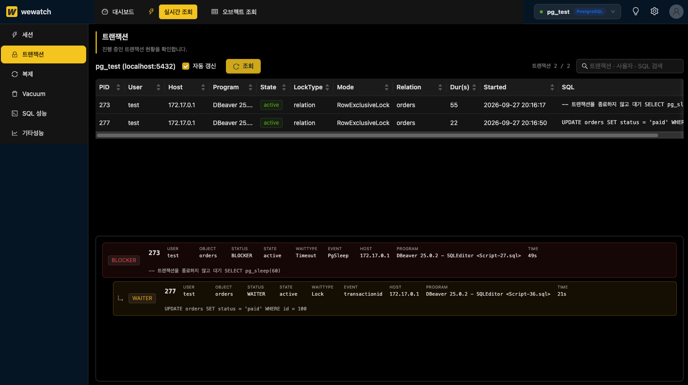
- 화면 상단은 진행 중인 트랜잭션을 확인합니다.
- 화면 하단은 블로킹 세션 존재 시 락트리를 확인합니다.(PostgreSQL / MySQL 서버 선택 시, Oracle은 아래 "Oracle 전용 화면 > 락"에서 확인)
- 락트리 각 항목에는 대기 상태(BLOCKER / BLOCKING / WAITER)와 함께 DB → User → Object 순서로 어느 계정이 어느 테이블을 두고 경합 중인지 표시되어, 어떤 세션을 종료해야 나머지가 풀리는지 한눈에 파악할 수 있습니다.
- 락트리의 항목을 클릭해도 세션 상세 드로어가 열립니다.
실시간 조회 — 복제 (Oracle / MySQL / PostgreSQL / SQL Server)
MySQL / PostgreSQL / SQL Server는 Primary/Standby 간 복제 상태를
확인합니다. Oracle의 경우 Data Guard 복제 상태를 확인합니다.
복제 구성이 안되어 있는 경우는 화면이 비어 보이며, 복제 구성이 되어
있는 서버만 선택하면 복제 상태를 확인할 수 있습니다.
MySQL / PostgreSQL
/realtime/replication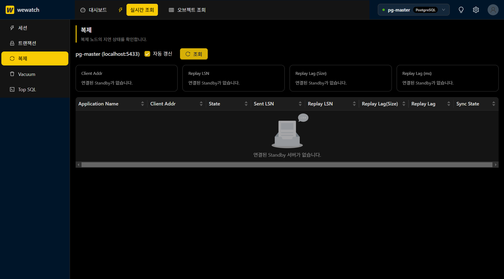
- 상단 카드에서 Primary/Standby 간 전송 지연과 Standby 상태를 한눈에 보고, 아래 표에서 Standby별 Host/Port/상태/전송 지연/적용 지연을 확인합니다.
Oracle (Data Guard)
/realtime/replication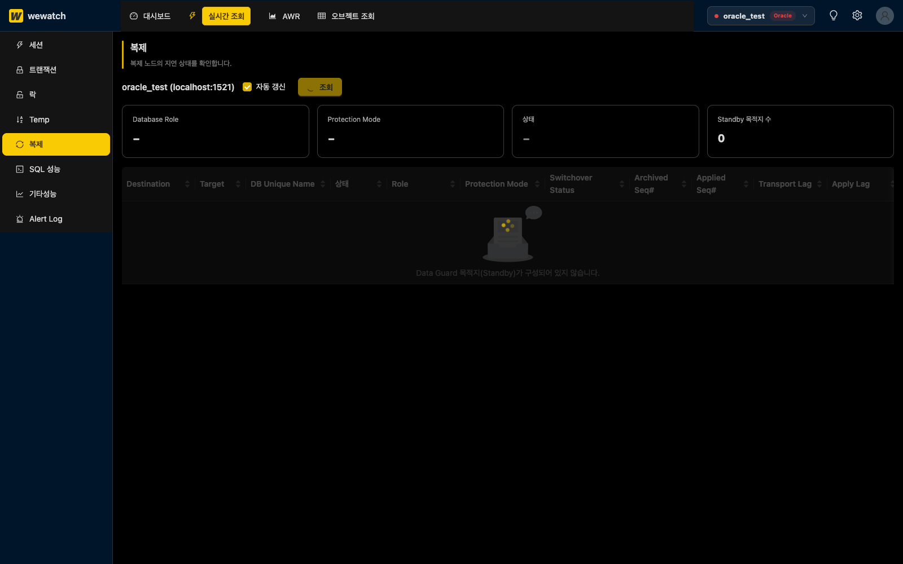
-
Oracle을 선택하면
V$DATABASE(역할/보호모드/스위치오버 상태) +V$ARCHIVE_DEST_STATUS(목적지별 전송 상태) +V$DATAGUARD_STATS(전송/적용 지연)를 조합해 Data Guard 구성을 보여줍니다. - 상단 카드에서 Database Role · Protection Mode · 상태 · Standby 목적지 수를 한눈에 보고, 아래 표에서 목적지별 Destination/Target/상태/Archived·Applied Seq#/Transport Lag/Apply Lag를 확인합니다.
실시간 조회 — Vacuum (PostgreSQL 전용)
PostgreSQL, EDB의 경우 Autovacuum 현황, 테이블별 Dead Tuple 비율,
Bloat(팽창률) 추정을
진행 중 / Dead Tuple / Bloat 세 탭으로 나눠
확인합니다.
진행 중
/realtime/vacuum > 진행 중 탭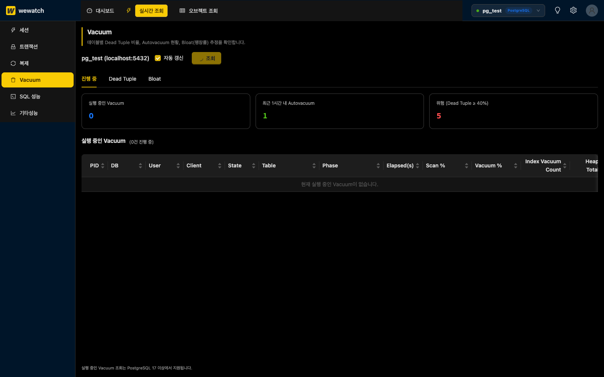
- 상단 카드에서 실행 중인 Vacuum 수 · 최근 1시간 내 Autovacuum 실행 수 · Dead Tuple 40% 이상인 위험 테이블 수를 한눈에 파악할 수 있습니다.
- 현재 실행 중인 Vacuum을 PID/DB/User/Table/Phase/진행률(Scan %·Vacuum %) 단위로 보여줍니다 — PostgreSQL 17 이상에서만 지원됩니다(그보다 낮은 버전에서는 "실행 중인 Vacuum이 없습니다"로 항상 비어 보입니다).
Dead Tuple
/realtime/vacuum > Dead Tuple 탭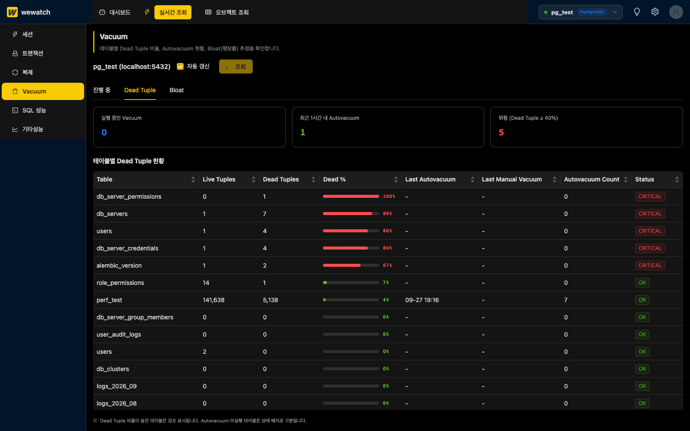
- 테이블별 Live/Dead Tuple 수와 비율(%), 마지막 Autovacuum/수동 Vacuum 시각을 확인합니다. Dead % 40% 이상이면 CRITICAL 배지로 강조됩니다.
Bloat
/realtime/vacuum > Bloat 탭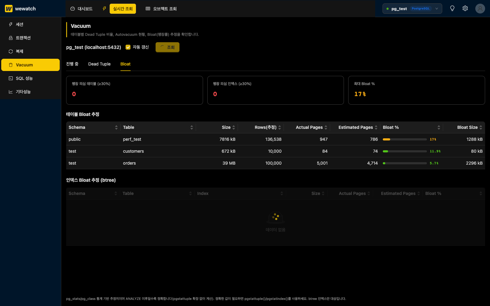
-
pg_stats/pg_class통계 기반으로 테이블과 btree 인덱스의 팽창률(Bloat %)을 추정합니다(별도 확장 설치 없이 계산되며, ANALYZE 이후일수록 정확합니다). 30% 이상이면 팽창 의심으로 카운트됩니다. -
더 정확한 값이 필요하면
pgstattuple()/pgstatindex()확장을 직접 사용하도록 안내 문구가 화면 하단에 표시됩니다.
실시간 조회 — 기타성능
DB 유형에 따라 추가적인 성능 화면을 제공합니다.
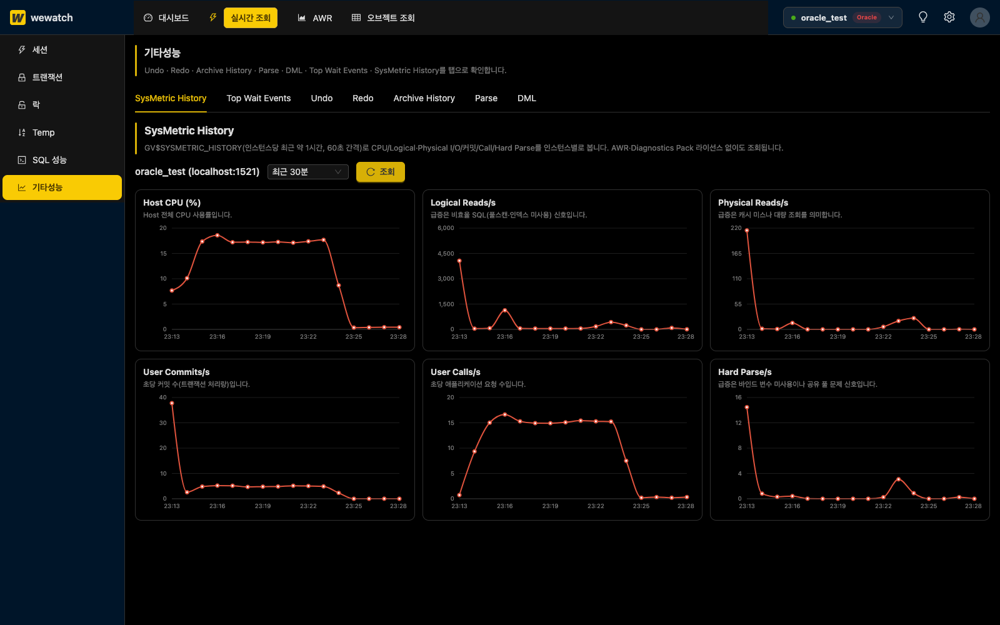
| Oracle | SysMetric History · Top Wait Events · Undo · Redo · Archive History · 백업(RMAN) · Parse · DML |
|---|---|
| MySQL | Top Wait Events · Full Scan SQL · TOP I/O Table · Unused Index · Redundant Index |
| PostgreSQL / EDB | Top Wait Events · I/O Statistics · Unused Index 등 |
-
스크린샷은 Oracle의 SysMetric History 탭입니다.
GV$SYSMETRIC_HISTORY(인스턴스당 최근 약 1시간, 60초 간격)를 바탕으로 Host CPU(%) · Logical Reads/s · Physical Reads/s · User Commits/s · User Calls/s · Hard Parse/s 여섯 개 그래프를 인스턴스별로 보여줍니다. AWR/Diagnostics Pack 라이선스가 없는 환경에서도 조회되는 것이 특징이라, 위 AWR 화면들을 못 쓰는 경우에도 최근 1시간 정도의 흐름은 이 탭으로 확인할 수 있습니다. - MySQL의 경우 Full Scan SQL / Unused Index / Redundant Index 탭은 인덱스를 안 쓰거나 비효율적으로 쓰는 SQL·테이블을 찾을 때 특히 유용합니다.
실시간 조회 — Alert Log (Oracle / MySQL / SQL Server)
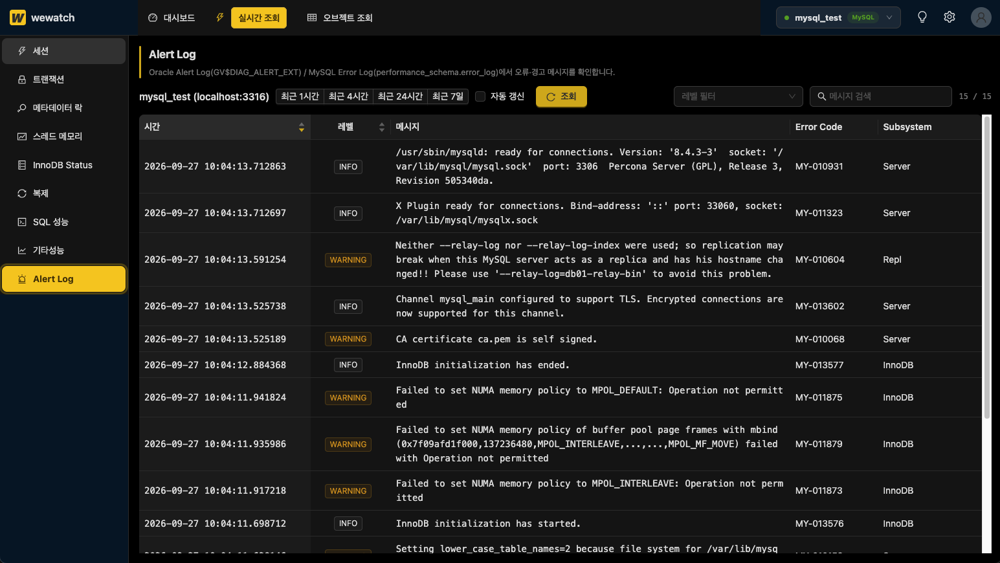
-
Oracle은
GV$DIAG_ALERT_EXT(모든 인스턴스의 Alert Log를 파일 대신 SQL로 조회), MySQL은performance_schema.error_log를, SQL Server는sys.sp_readerrorlog를 조회합니다. PostgreSQL은 동등한 조회 수단이 없어 이 메뉴 자체가 보이지 않습니다. - 상단의 최근 1시간 / 4시간 / 24시간 / 7일 버튼으로 조회 기간을 빠르게 바꿀 수 있고, 우측의 레벨 필터(ERROR / WARNING / INFO / TRACE)와 메시지 검색으로 원하는 로그만 좁혀볼 수 있습니다. 둘 다 이미 받아온 결과 안에서 즉시 걸러지므로 다시 조회할 필요가 없습니다.
실시간 조회 — Oracle 전용 화면
아래 화면들은 Oracle 서버를 선택했을 때만 좌측 메뉴에 나타납니다.
락 (v$lock)
/realtime/lock-detail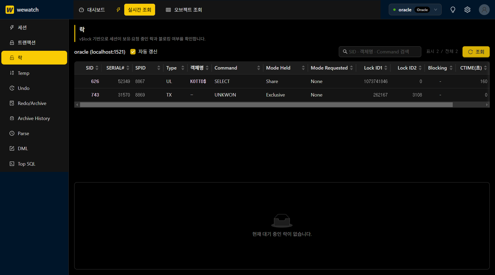
- 상단 표에서 세션이 들고 있거나 기다리는 락 목록을 확인하고, 하단 락트리에서 블로커/대기자 관계를 한눈에 봅니다.
- 행(row) 단위 락(TX)도 이제 어떤 테이블을 두고 경합 중인지 오브젝트명이 정확히 표시됩니다(예전에는 "TX-ROW LOCK"이라는 값으로만 나와 어떤 테이블인지 알 수 없었습니다).
Temp
/realtime/tempsegs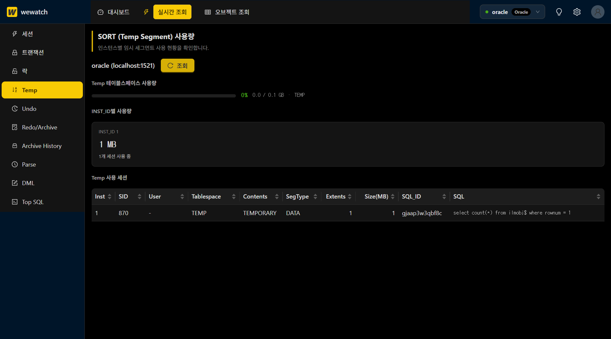
- Temp 사용량을 확인합니다.
Undo (기타성능 탭)
/realtime/misc > Undo 탭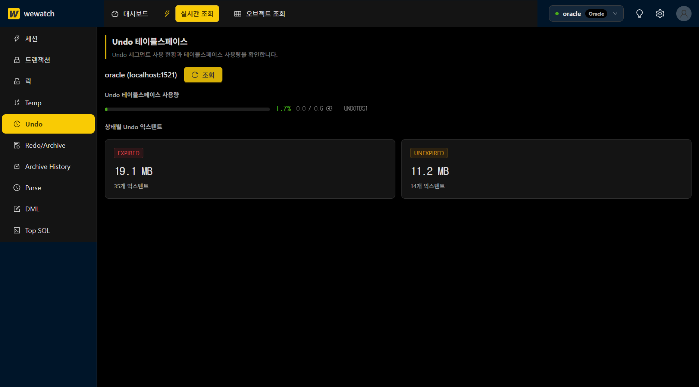
- Undo 사용량을 확인합니다. Active / Expired / Unexpired 로 구분하여 표시됩니다.
Redo / Archive (기타성능 탭)
/realtime/misc > Redo 탭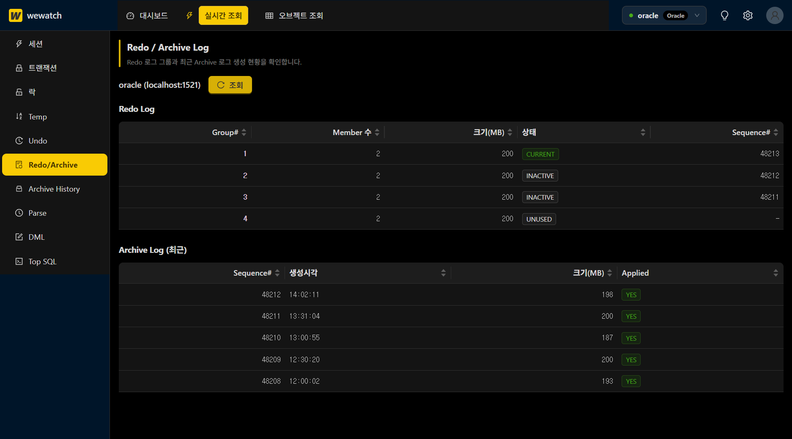
- Redo 및 Archive 상태를 확인합니다.
Archive History (기타성능 탭)
/realtime/misc > Archive History 탭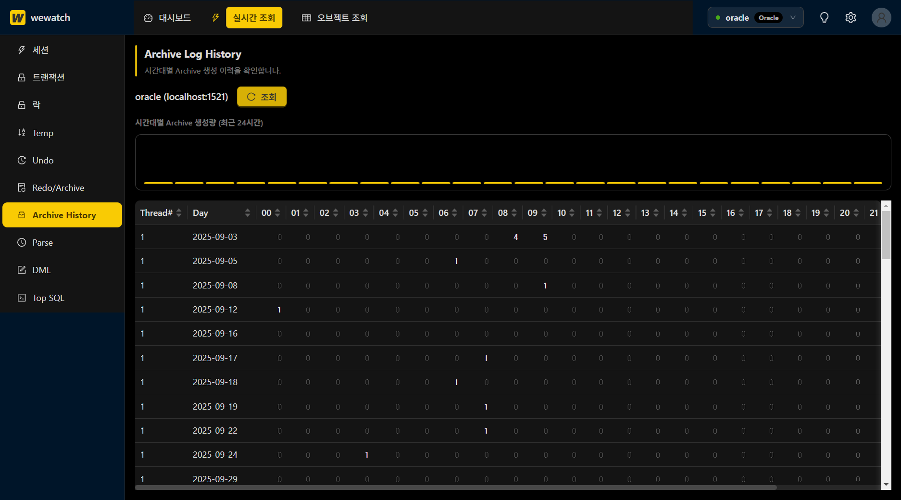
- Archive History를 확인합니다.하단 표의 일자를 클릭 시 해당 일자의 Archive 정보를 그래프로 확인할 수 있습니다.
백업(RMAN) (기타성능 탭)
/realtime/misc > 백업(RMAN) 탭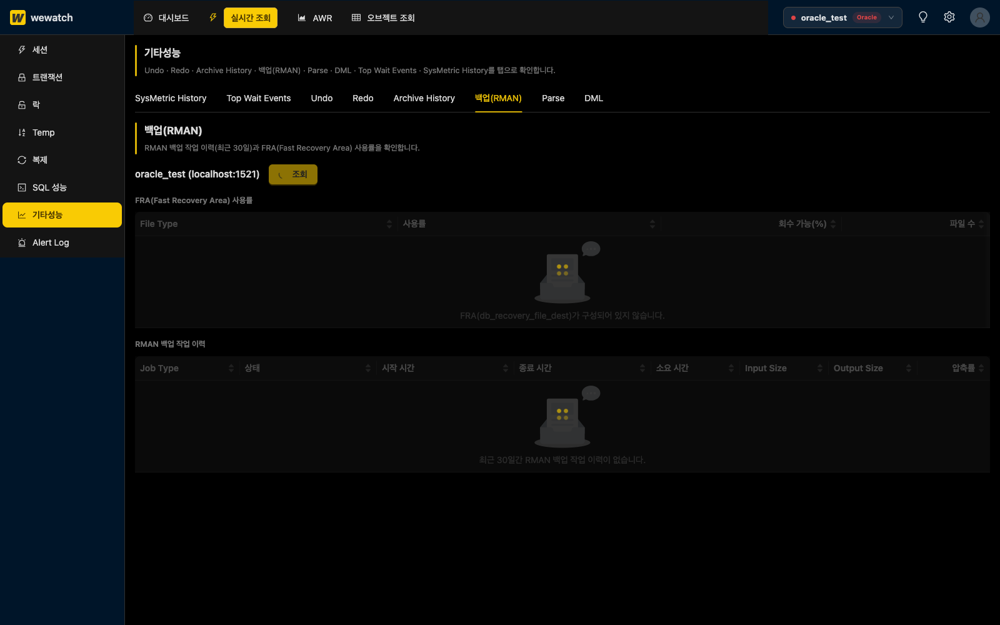
-
V$RMAN_BACKUP_JOB_DETAILS로 최근 30일간의 RMAN 백업 작업 이력(작업유형/상태/시작·종료시간/소요시간/ Input·Output Size/압축률)을 확인합니다. 상태가 FAILED면 빨간색, RUNNING이면 파란색 배지로 표시됩니다. -
표 위쪽에는
V$RECOVERY_AREA_USAGE기반 FRA(Fast Recovery Area) 사용률이 함께 표시됩니다 — FRA가 꽉 차면 백업/아카이브가 실패하는 흔한 원인이라 같은 화면에서 바로 확인할 수 있게 했습니다(80% 이상 주황색, 95% 이상 빨간색 경고).
Parse (기타성능 탭)
/realtime/misc > Parse 탭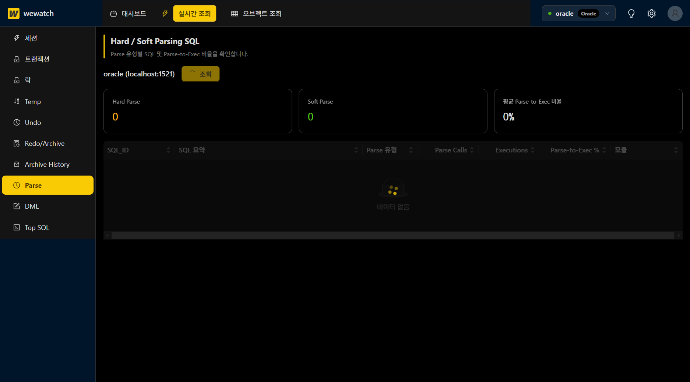
- Hard Parse 통계를 확인합니다. 바인드 변수를 사용하지 않는 쿼리에 대한 정보를 제공합니다.
DML (기타성능 탭)
/realtime/misc > DML 탭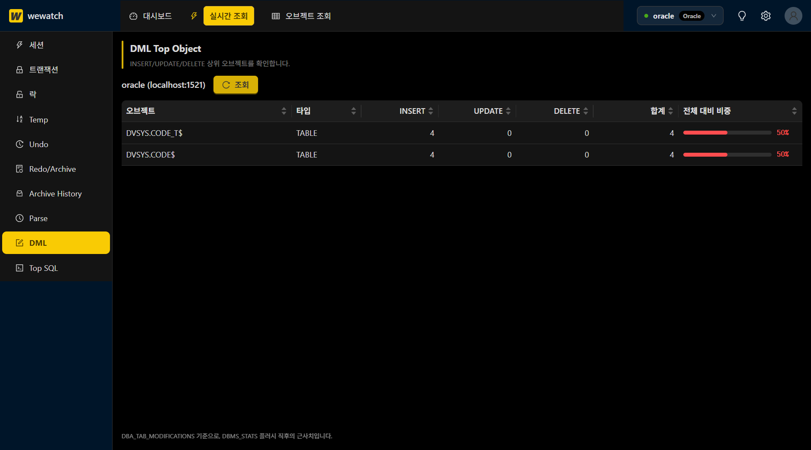
- DML 통계를 확인합니다. DML이 빈번히 발생되고 테이블을 수정하는 경우의 통계를 제공합니다.
실시간 조회 — MySQL 전용 화면
아래 화면들은 MySQL 서버를 선택했을 때만 좌측 메뉴에 나타납니다.
메타데이터 락
/realtime/metadata-locks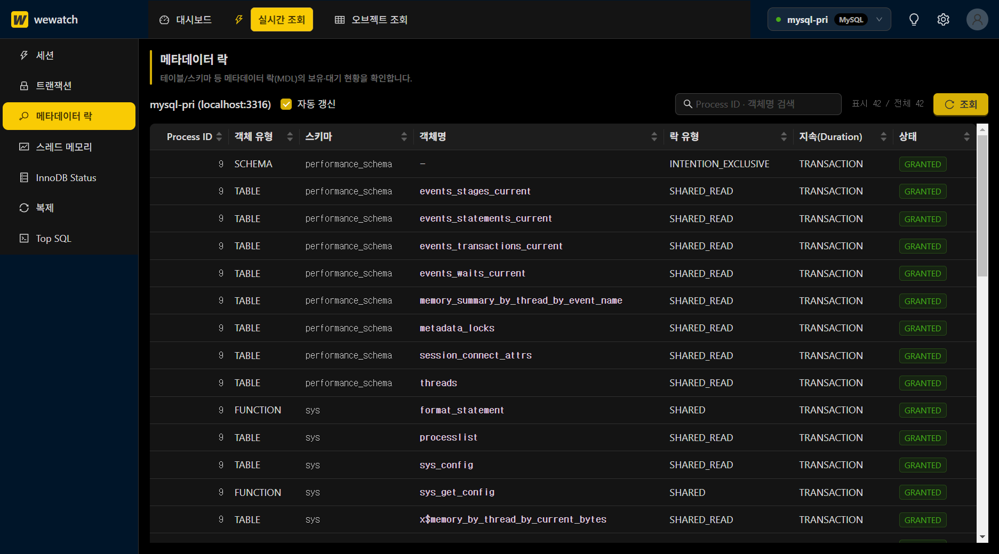
- 메타데이터 락 상태를 확인합니다. 메타데이터 락은 테이블이나 인덱스에 대한 접근을 제어하는 데 사용됩니다.
스레드 메모리
/realtime/thread-memory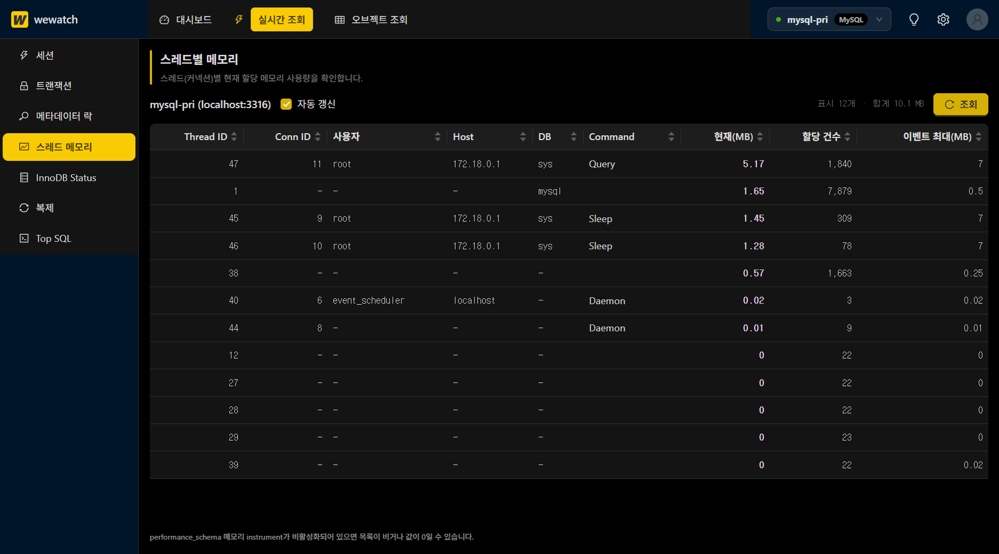
- 스레드별 메모리 상태를 확인합니다. 메모리 사용량이 높은 스레드를 식별할 수 있습니다.
InnoDB Status
/realtime/innodb-status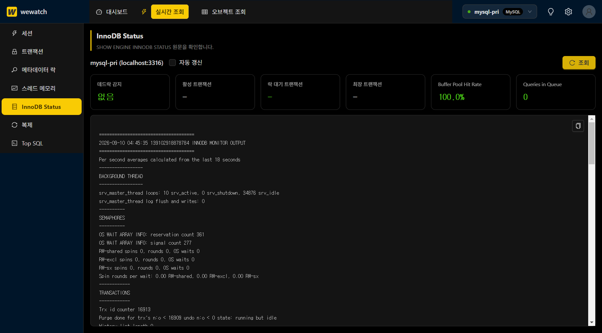
- InnoDB 상태를 확인합니다. 상단 카드를 통해 요약된 상태를 확인할 수 있습니다.
실시간 조회 — TOP SQL
TOP SQL을 확인합니다.
Top SQL
/realtime/topsql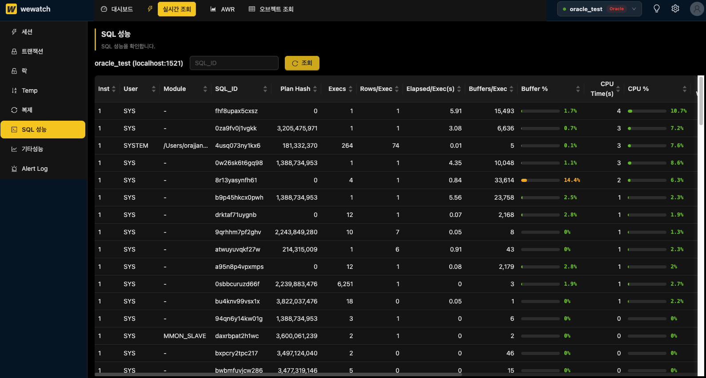
- CPU 등 다양한 기준으로 Top SQL을 확인합니다.
- SQL 선택 시 상세 정보를 확인 할 수 있습니다.
AWR — ASH / 시스템 메트릭 / 대기 이벤트 (Oracle 전용)
"AWR" 그룹은 Oracle 서버를 선택했을 때만 나타나는, 과거
시점의 성능 데이터를 분석하는 기능들을 제공합니다. "실시간 조회"와
달리, AWR은 DBA_HIST_* 뷰에 주기적으로 쌓인 스냅샷을
바탕으로 "그때 무슨 일이 있었는지"를 되짚어 볼 때 씁니다 — 예를 들어
어제 새벽에 배치가 느려졌다는 리포트를 받았을 때, 그 시간대만 골라
어떤 SQL·대기 이벤트가 원인이었는지 확인할 수 있습니다.
ASH
/awr/ash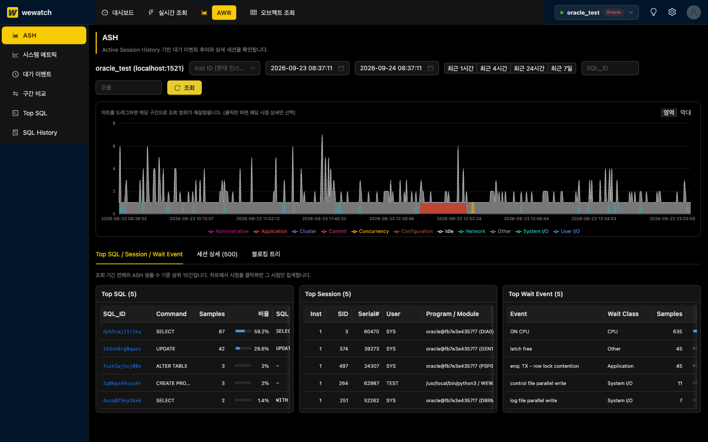
- Active Session History(초 단위로 "그 순간 활동 중이던 세션" 샘플) 기반으로 대기 이벤트 추이를 시계열 차트로 보여줍니다.
- 차트를 클릭하거나 드래그해서 구간을 좁히면, 그 구간에 해당하는 세션 상세와 Top SQL / Top Session / Top Wait Event 요약이 즉시 갱신됩니다(각 5개씩 대표 항목만 간결하게 보여줍니다).
- 특정 SQL_ID나 모듈명으로 필터링해서 "이 SQL이 실행되는 동안 주로 어떤 대기가 있었는지"처럼 좁혀서 볼 수도 있습니다.
시스템 메트릭
/awr/metrics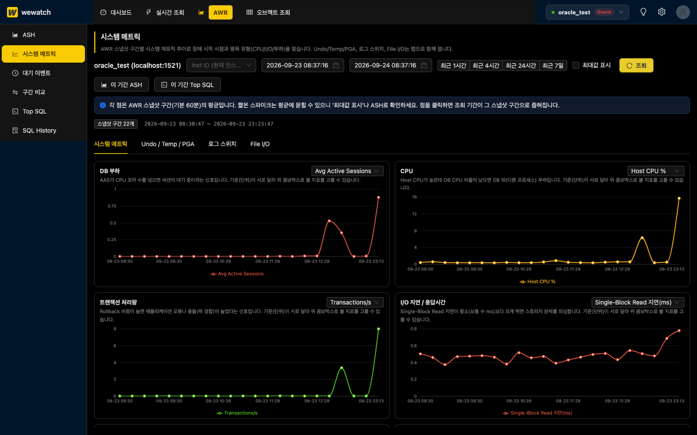
- CPU, I/O, 메모리 등 인스턴스 단위 시스템 지표의 시계열 추이를 확인합니다.
- 이를 통해 "어제 새벽에 배치가 느려진 이유가 CPU 부족 때문이었는지, I/O 병목 때문이었는지"처럼 원인을 좁혀볼 수 있습니다.
대기 이벤트
/awr/wait-events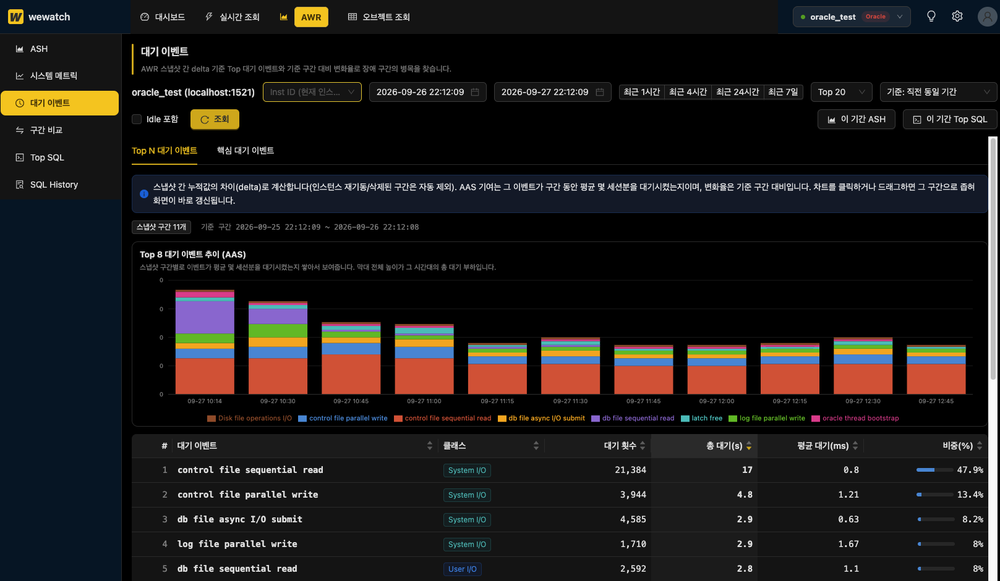
- 선택한 기간 동안 가장 많은 시간을 차지한 대기 이벤트를 순위로 보여줍니다. 이를 통해 주요한 병목 지점을 빠르게 파악할 수 있습니다.
- 대기 횟수·총 대기시간·평균 대기시간과 함께, 전체 대비 비중(%)이 막대 그래프로 표시되어 상대적인 비중을 한눈에 비교할 수 있습니다.
구간 비교
/awr/compare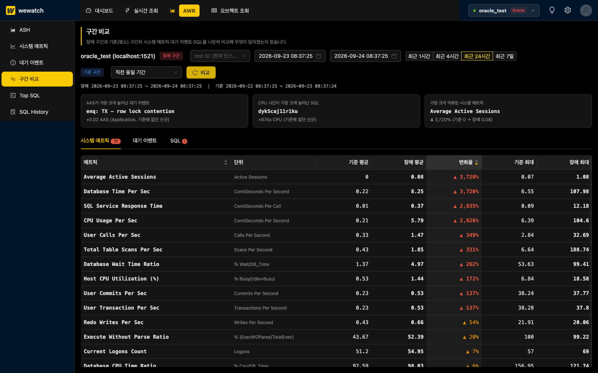
- 서로 다른 두 시간 구간(예: 장애 발생 전/후, 어제 같은 시간대/오늘)의 성능 지표를 나란히 비교합니다.
- 평상 시 대비 특정 구간에서 CPU·세션·대기 이벤트·Top SQL 등 어떤 지표가 급격히 변했는지 확인할 수 있습니다.
SQL 성능
/awr/top-sql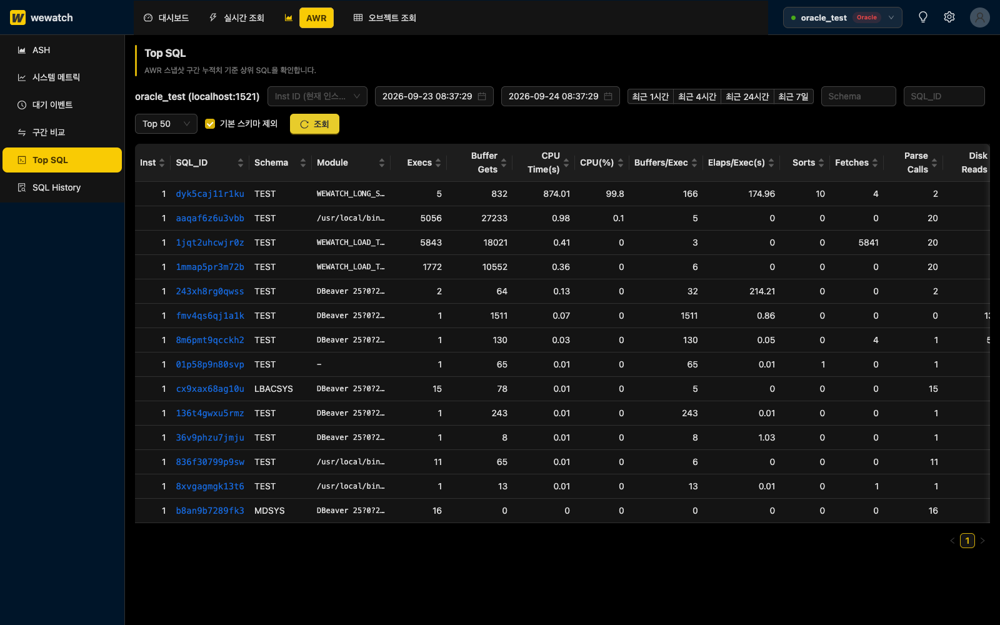
-
Top SQL / Unstable SQL / Parallel Downgrade / SQL Response4개 탭으로 구성됩니다. -
Top SQL: AWR 스냅샷 기준으로 부하가 컸던 SQL 순위를 확인합니다. -
Unstable SQL: 같은 SQL이 실행계획이 바뀌면서 평균 실행시간이 널뛰는 경우를 찾습니다 — 최댓값과 최솟값의 차이(Diff Secs, 기본 2초)가 큰 SQL만 골라 보여줍니다. -
Parallel Downgrade: Parallel 실행이 요청한 병렬도보다 적게 배정되거나 직렬로 전환된 비율을 시간대별로 확인합니다. -
SQL Response: SQL Service Response Time 지표 추이를 인스턴스별 차트와 상세 테이블로 함께 보여줍니다.
SQL History
/awr/sql-history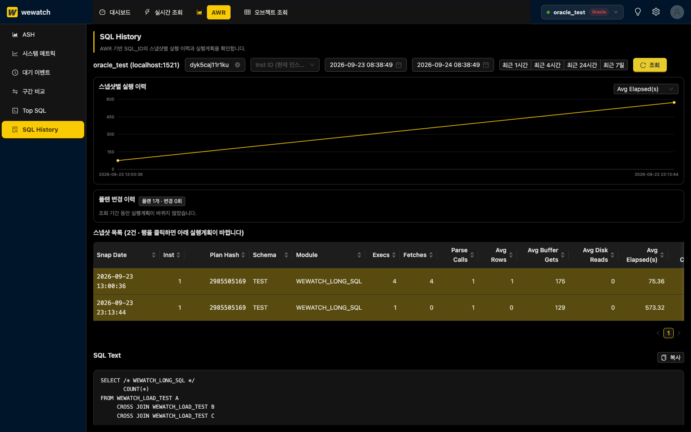
- 특정 SQL_ID의 과거 실행 이력(실행 횟수, 평균 소요시간, 실행계획 변경 여부 등)을 시간순으로 추적합니다.
- AWR 분석 화면에서 sql_id를 클릭하면 바로 이 화면으로 이동해, 그 SQL이 과거에 언제 실행됐고 어떤 성능을 보였는지 확인할 수 있습니다.
DBA_HIST_* 뷰 조회 권한이 필요합니다. 조회용
계정에 권한이 없다면 접속 정보를 등록한 관리자에게
SELECT_CATALOG_ROLE 부여를 요청하세요. 기본 조회 기간은
짧아서(예: 최근 1시간) 그 사이에 AWR 스냅샷이 없으면 "비교 가능한
데이터가 없습니다"로 보일 수 있습니다 — 그럴 땐 상단의
"최근 24시간" 이나 "최근 7일" 버튼으로 조회 기간을
넓혀보세요.
오브젝트 조회 — 데이터베이스
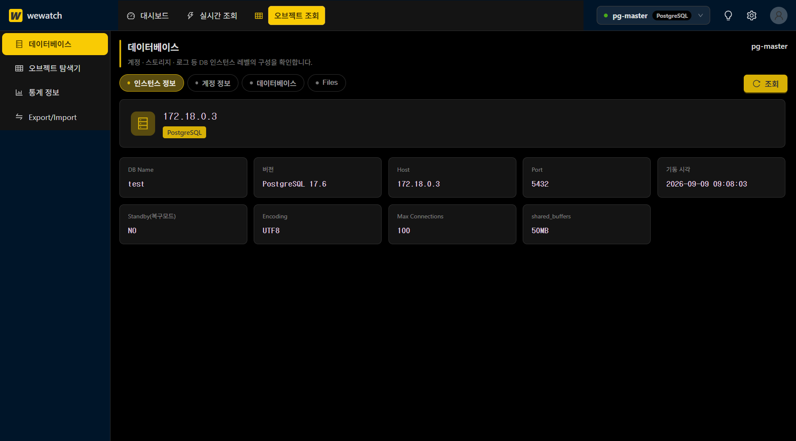
-
인스턴스 정보, 계정 정보, 데이터베이스/테이블스페이스, Files등 인스턴스 레벨 구성을 탭으로 확인합니다. - 인스턴스 정보는 기본적인 데이터베이스 구성 현황을 보여줍니다.
- 계정 정보는 인스턴스에 존재하는 계정과 권한을 확인합니다. 계정 클릭 시 권한 상세를 확인할 수 있습니다.
- 데이터베이스/테이블스페이스는 인스턴스에 존재하는 데이터베이스와 테이블스페이스를 확인합니다. 클릭 시 상세 정보를 확인할 수 있습니다.
오브젝트 조회 — 오브젝트 탐색기
좌측 트리에서 스키마별 테이블/뷰/함수/시퀀스/트리거를 탐색하고, 우측 탭에서 컬럼·인덱스·제약조건·파티션·트리거·권한·DDL을 확인합니다.
테이블 상세 (PostgreSQL 예시)
/objects/explorer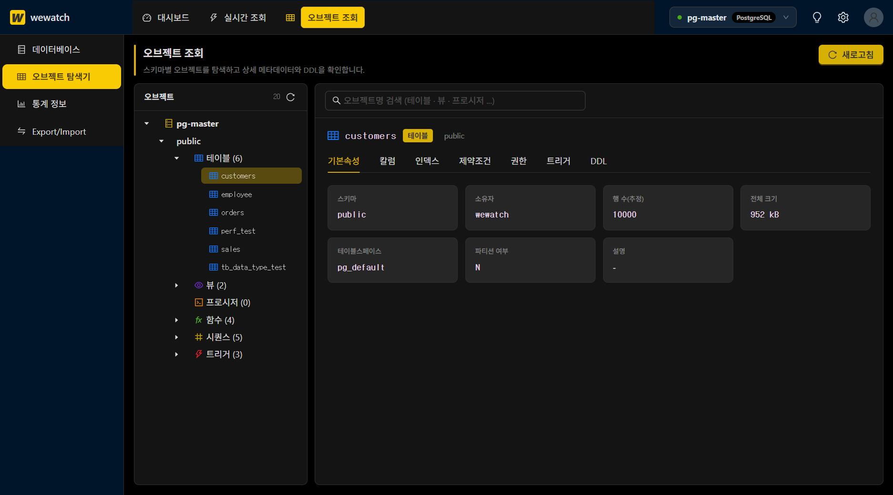
-
DDL 탭에서는
CREATE TABLE문뿐 아니라, MySQL은 트리거·권한(GRANT) 문까지 함께 재구성해서 보여줍니다 — DDL만 복사해도 트리거/권한까지 그대로 재현할 수 있습니다. -
DDL 안의
SELECT·CREATE·TABLE같은 SQL 예약어는 색상으로 강조되어, 문장이 길어져도 구조를 빠르게 훑어볼 수 있습니다.
오브젝트 조회 — 통계 정보
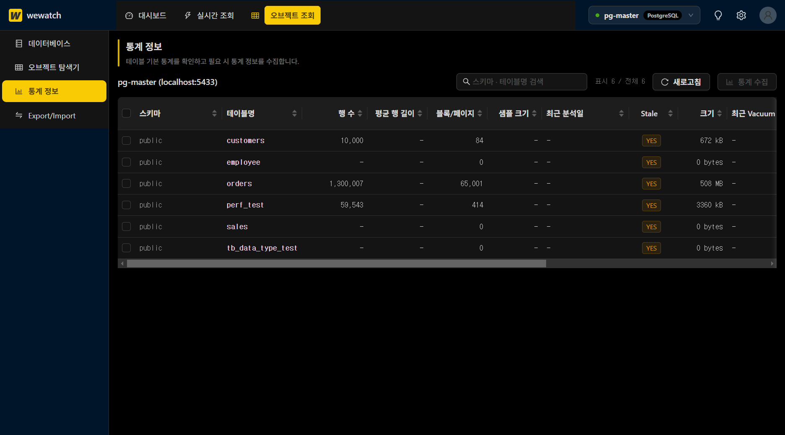
- 테이블별 행 수, 크기, Stale 여부 등을 확인하고, 필요 시 체크박스로 선택해 통계 수집을 실행할 수 있습니다.
- 통계 수집 시 실행계획이 변경될 수 있으므로, 통계 수집 전후의 실행계획을 개발 DB에서 우선 비교해보는 것이 좋습니다.
오브젝트 조회 — 파라미터
인스턴스 파라미터(Oracle의 V$PARAMETER, PostgreSQL의
pg_settings, MySQL의
SHOW GLOBAL VARIABLES에 해당)의 이름과 현재 값을 한
화면에서 검색·확인합니다.
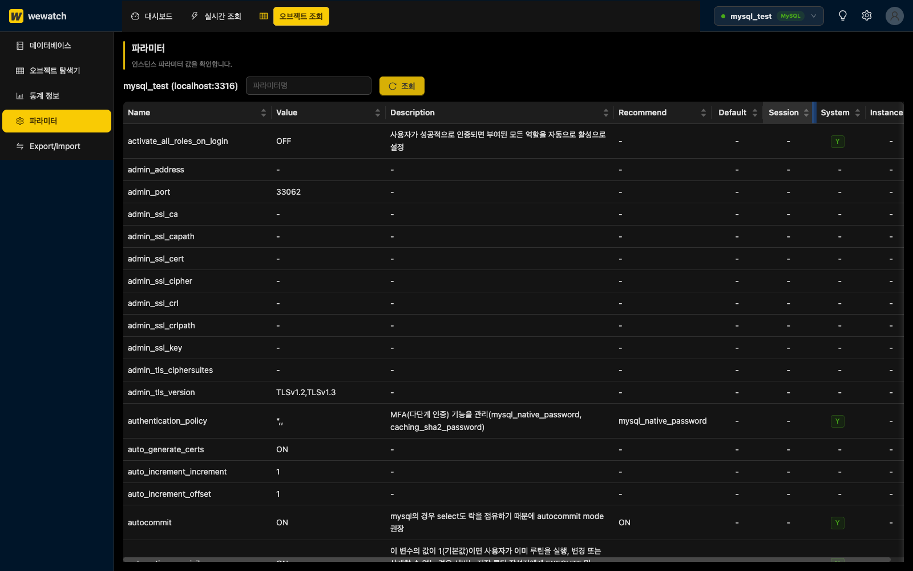
- 파라미터명으로 검색해 원하는 항목만 좁혀 볼 수 있습니다(부분 일치, 예: "buffer"를 입력하면 이름에 buffer가 들어간 파라미터가 모두 나옵니다).
-
MySQL은 Description(설명)과 Recommend(권장값) 칼럼이
추가로 제공됩니다. 위 스크린샷의
autocommit항목처럼, 설명 칼럼에는 "mysql의 경우 select도 락을 점유하기 때문에 autocommit mode 권장"처럼 그 파라미터가 왜 중요한지까지 안내되고, Recommend 칼럼에는 권장 설정값(이 경우 ON)이 함께 표시되어 파라미터 이름만으로는 알기 어려운 맥락을 바로 옆에서 확인할 수 있습니다.
오브젝트 조회 — Export / Import
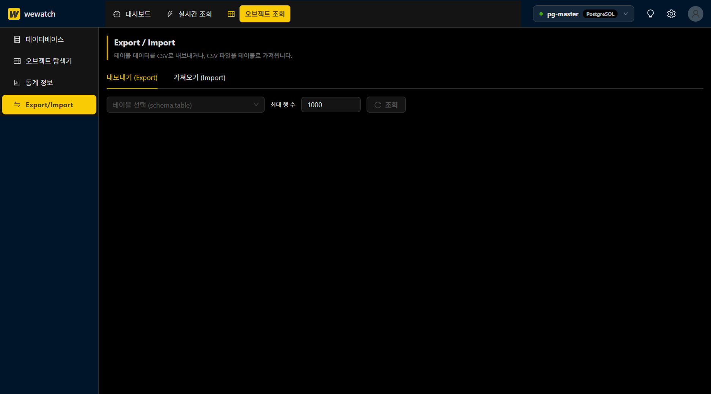
테이블 데이터를 CSV로 내보내거나, CSV 파일을 업로드해 테이블로 가져올 수 있습니다.
관리자 — 사용자 / 역할 관리
우측 상단 톱니바퀴 아이콘(⚙)을 눌러 관리자 화면으로 이동합니다. 관리자 화면은 별도 좌측 메뉴 구성을 갖습니다.
사용자 관리
/admin/users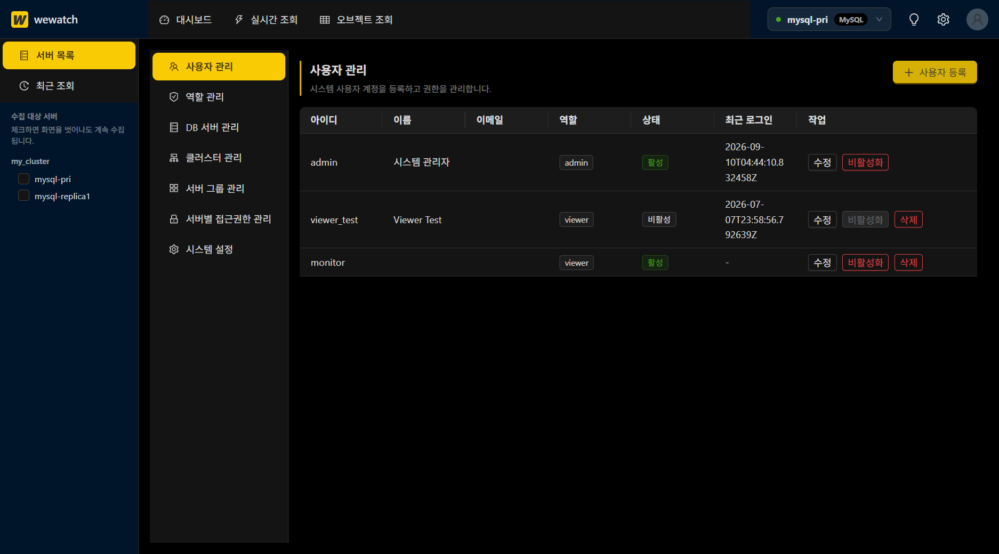
계정 등록/수정/비활성화, admin 계정으로 로그인한 경우에 한해 계정 완전 삭제도 가능합니다.
역할 관리
/admin/roles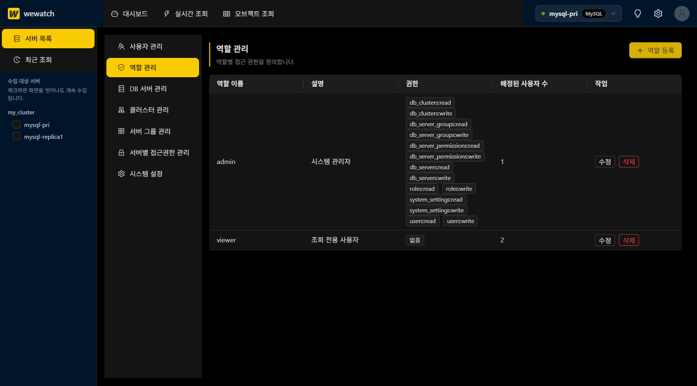
역할별로 화면/기능 권한(permission)을 부여합니다.
관리자 — DB 서버 / 클러스터 / 권한
DB 서버 관리
/admin/db-servers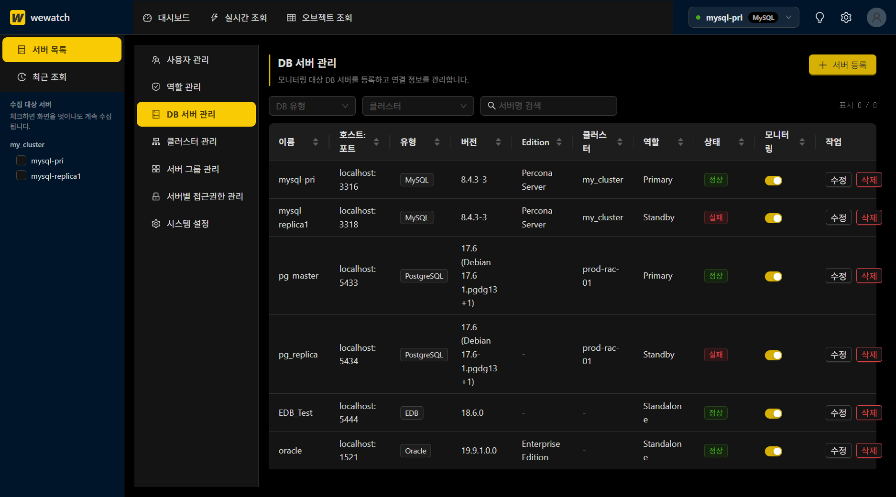
- 모니터링할 DB 서버를 등록/수정합니다. "서버 등록" 버튼으로 호스트·포트·접속 계정을 입력하고, "연결 테스트"로 즉시 접속 여부를 확인할 수 있습니다.
- 기존 서버를 수정할 때 계정/비밀번호를 바꾼 뒤 저장하기 전에 "연결 테스트"를 누르면, 이제 방금 입력한 새 계정/비밀번호로 테스트합니다(예전에는 저장하기 전까지는 항상 이전에 저장돼 있던 계정으로만 테스트되어, 새 계정 정보를 입력해도 엉뚱하게 예전 계정 오류가 나는 것처럼 보이는 문제가 있었습니다).
- 수정 내용을 저장하면 접속 상태도 바로 다시 확인되어, 목록의 상태 표시(초록/빨강 점)가 최신 정보로 즉시 갱신됩니다.
클러스터 관리
/admin/db-clusters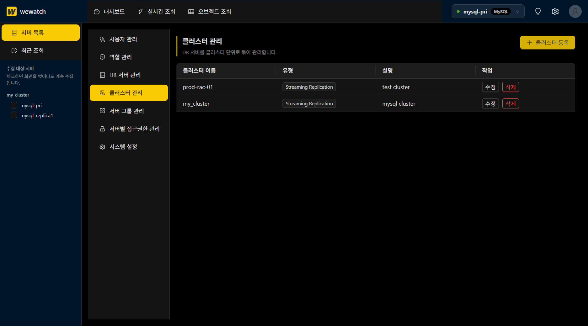
Primary/Standby로 구성된 서버들을 하나의 클러스터로 묶어 대시보드에서 함께 조회할 수 있게 합니다.
서버별 접근권한 관리
/admin/db-server-permissions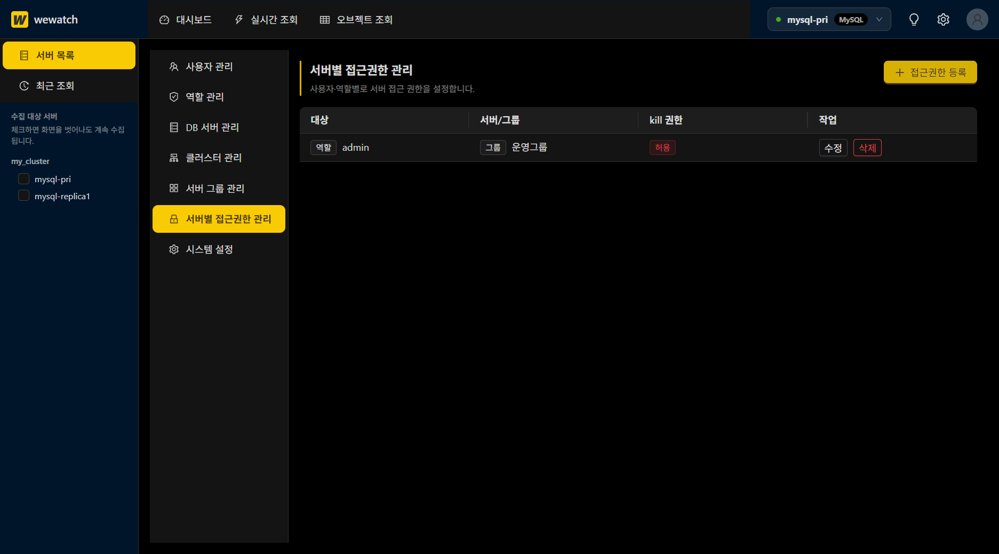
사용자 또는 역할 단위로 어떤 서버를 볼 수 있는지, kill 권한을 가질지 지정합니다.
관리자 - 서버 그룹 관리
모니터링 대상 서버가 많아지면 하나하나 개별로 다루기보다, 업무 용도나 시스템 단위로 묶어서 관리하는 것이 편리합니다. "서버 그룹"은 여러 대의 서버를 하나의 이름으로 묶어두는 기능으로, 다음 두 곳에서 바로 효과가 있습니다.
- 헤더 서버 선택 드롭다운 — 대시보드의 서버 선택 드롭다운 상단 탭에 그룹명이 노출되어, 그 그룹에 속한 서버만 빠르게 모아 볼 수 있습니다.
- 접근권한 일괄 부여 — 서버별 접근권한 관리에서 서버 하나하나가 아니라 그룹 단위로 접근권한을 한 번에 부여/회수할 수 있어, 서버가 늘어나거나 담당자가 바뀔 때 관리가 훨씬 쉬워집니다.
그룹 목록
/admin/db-server-groups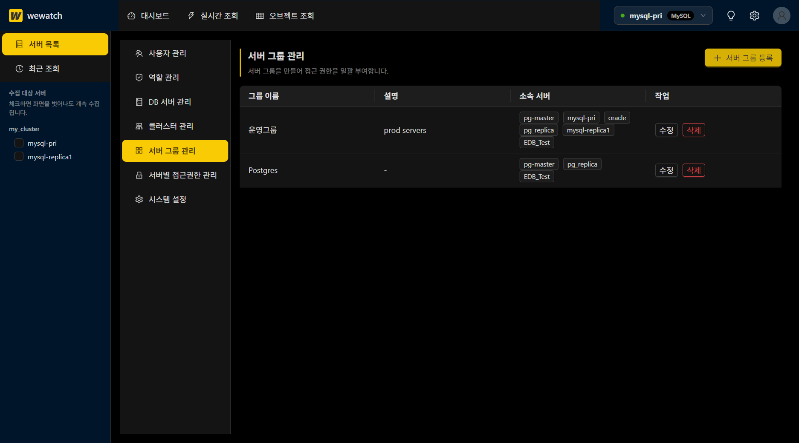
그룹 등록
/admin/db-server-groups > "서버 그룹 등록" 버튼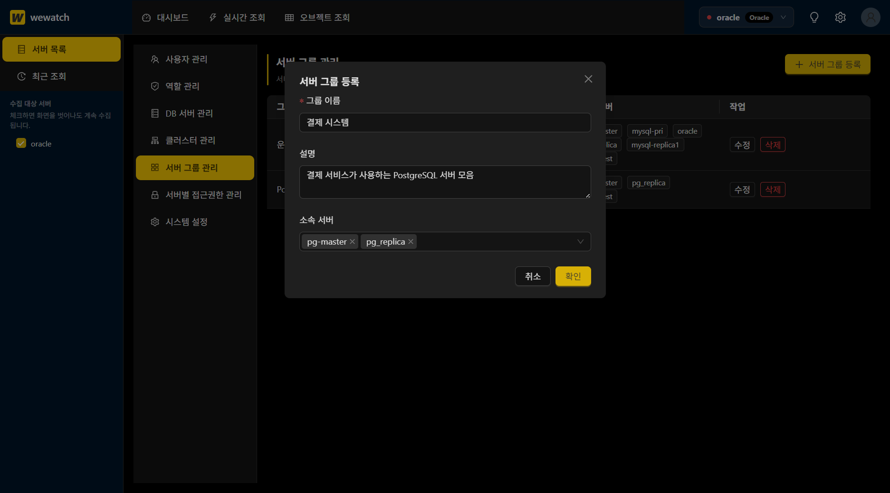
그룹 이름과 설명을 입력하고, "소속 서버"에서 이 그룹에 포함할 서버를 여러 개 선택합니다. 예를 들어 "결제 시스템", "회원 시스템"처럼 업무 단위로 묶거나, "운영", "개발/테스트"처럼 환경 단위로 묶을 수 있습니다.
관리자 — 시스템 설정
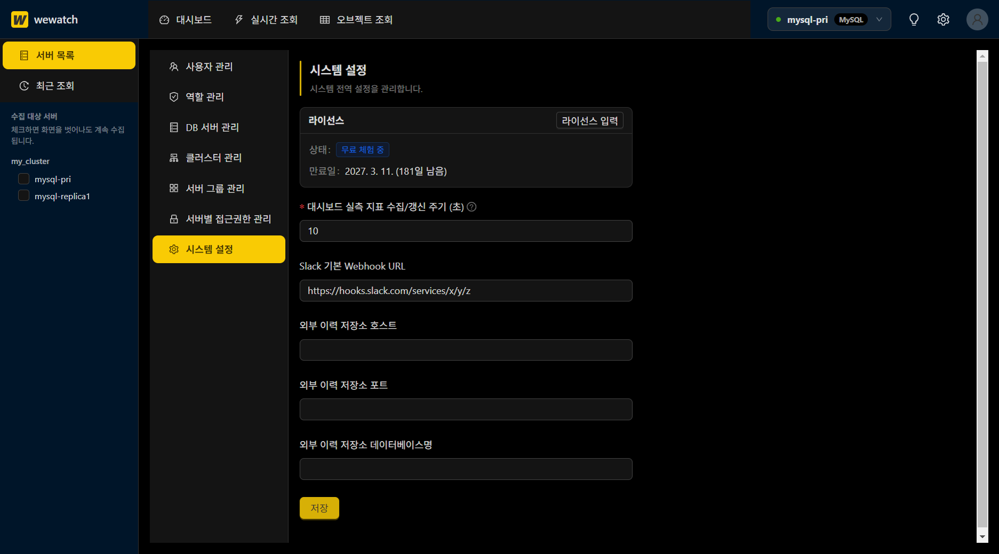
- 대시보드 갱신 주기, 외부 이력 저장소 연결 정보 등 전역 설정을 확인하고 수정합니다.
- 라이선스 상태/입력 카드를 확인하고, 라이선스 키를 입력할 수 있습니다.
- 오라클의 경우 대소문자 구분을 무시하도록 설정이 되어 있거나 패스워드 정책이 10g이전일 경우 Thick모드로 Oracle Instant Client를 설치 후 설치 디렉토리를 설정해야 합니다. (Thin모드에서는 대소문자 구분이 적용되어 접속이 되지 않습니다.)
라이선스
wewatch는 최초 실행일로부터 6개월 무료 체험이 제공됩니다. 체험 기간에는 모든 기능을 제한 없이 사용할 수 있으며, 화면 상단에 만료 14일 이내부터 안내 배너가 표시됩니다. 체험 기간이 끝나면 로그인은 계속 가능하지만 그 외 모든 기능이 잠기며, 정식 라이선스 키를 입력해야 다시 사용할 수 있습니다.
라이선스 입력
시스템 설정 > 라이선스 카드 > "라이선스 입력" 버튼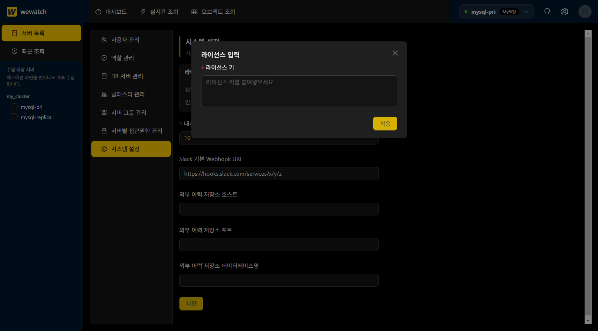
발급받은 라이선스 키를 붙여넣고 "적용" 버튼을 누르면 즉시 반영됩니다. 만료 전에 미리 입력해도 됩니다.
자주 묻는 질문 (Q&A)
사용 중 자주 나오는 질문을 모았습니다. 원하는 답을 못 찾았다면 매뉴얼 각 화면 설명을 참고하거나, wewatch 공급사에 문의해주세요.
Q. 로그인은 했는데 서버 선택 드롭다운에 아무 서버도 안 보여요.
A. 서버가 DB 서버 관리에 등록돼 있어도, 내 계정(또는 내가 속한 역할)에 접근권한이 부여돼 있지 않으면 드롭다운에 나타나지 않습니다. admin 계정으로 접속권한 관리 화면에서 내 계정 또는 역할에 해당 서버(또는 서버가 속한 그룹)의 접근권한을 부여해달라고 요청하세요.
Q. 서버 접속 정보를 수정했는데 목록에는 계속 "접속 실패"로 나와요.
A. 최신 버전에서는 수정 내용을 저장하면 자동으로 접속 상태를 다시 확인하므로, 저장 직후 목록의 상태 점이 바로 갱신됩니다. 그래도 계속 실패로 보인다면 실제로 입력한 호스트/포트/계정 정보가 맞는지, 방화벽이나 DB 접속 권한(예: 특정 IP만 허용)에 막혀있지 않은지 확인해보세요. "연결 테스트" 버튼을 눌러 나오는 상세 에러 메시지가 원인 파악에 도움이 됩니다.
Q. 대시보드에 표시되는 그래프 지표를 바꾸고 싶어요.
A. 대시보드 화면 상단의 "그래프 설정" 버튼을 눌러 원하는 지표를 체크/해제하면 됩니다. 선택한 구성은 계정 × DB 엔진 단위로 서버에 저장되어, 다른 PC에서 같은 계정으로 로그인해도 그대로 유지됩니다.
Q. 등록된 서버가 많아지면서 목록 관리가 번거로워요.
A. 서버 그룹 관리에서 업무 용도나 환경 단위로 서버를 그룹으로 묶어두면, 대시보드 드롭다운에서 그룹 단위로 모아 보거나 접근권한을 그룹 단위로 한 번에 부여할 수 있어 관리가 훨씬 편해집니다.
Q. 무료 체험 기간이 끝나면 어떻게 되나요?
A. 로그인 자체는 계속 가능하지만 조회 등 그 외 모든 기능이 잠깁니다. 라이선스 섹션을 참고해 정식 라이선스 키를 발급받아 입력하면 즉시 다시 사용할 수 있습니다. 만료 14일 전부터 화면 상단에 안내 배너가 표시되니 미리 준비하실 수 있습니다.